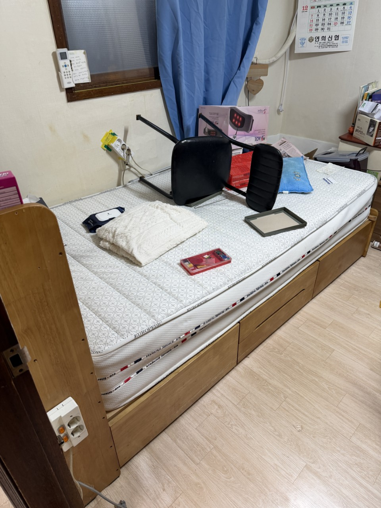
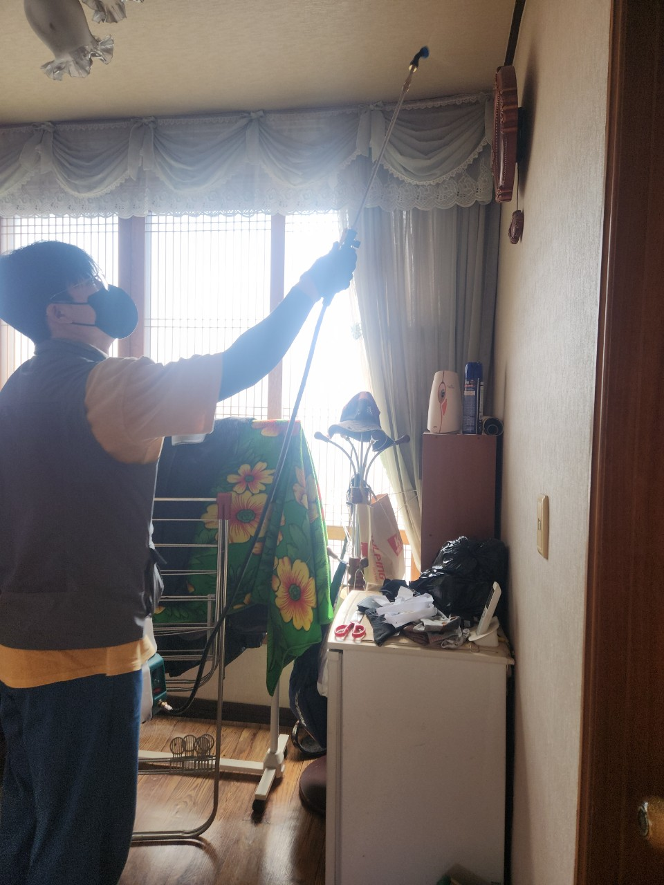
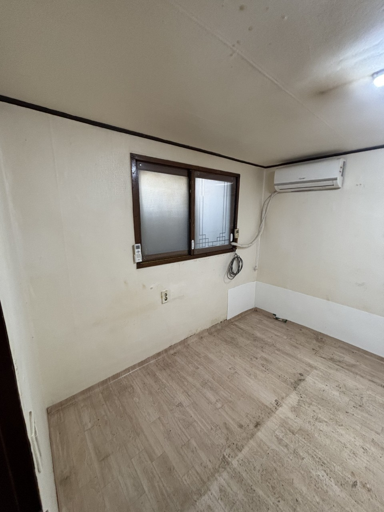

45만원부터입니다. 원룸처럼 좁아도 적치가 천장까지면 인원이 늘어 금액이 달라집니다.
인창동 · 구리 중심 주거
인창동 유품정리,
인창동 유품정리,
밀집 주거 세대 상담
인창동은 구리시에서 면적이 작은 편인 행정동입니다. 주거가 촘촘하고 구리역·시청 생활권과 바로 이어집니다. 방이 적어도 물건 밀도는 높은 현장이 많아, 평수보다 적치 높이를 먼저 봅니다. 구리 올바른정리는 인창동 유품정리를 보관 상자 기준으로, 통로가 막힌 세대는 쓰레기집청소로 분류합니다.
SERVICE
구리시 인창동에서 맡기는 작업
인창동은 원룸·빌라 한 세대 통째 비우기 문의가 꾸준합니다.
유품정리
인창동 소형 세대 유품
옷장과 싱크대에 서류가 섞여 있는 경우가 많습니다. 작업 전 30분만 가족이 통장·인감·사진을 골라 주시면 나머지 분류가 빨라집니다. 옆집과 벽이 가까워 소음이 적은 시간대를 권합니다.
쓰레기집청소
인창동 적치 세대 상차
문 앞까지 봉투가 차 있으면 내부부터 통로를 열고 시작합니다. 골목에 본차를 오래 두지 못하고, 입구 적재를 짧게 순환합니다. 임대 복도는 관리자 동의가 있으면 더 수월합니다.
PRICE
인창동 비용이 달라지는 지점
인창동은 면적 대비 물건 밀도가 높아 사진 견적이 특히 중요합니다.
* 부가세 별도 · 시작가이며 현장 확인 후 확정
유품정리
45만원 부터~
소형 세대라도 상자 수가 많으면 45만원 시작가에서 조정됩니다.
고독사 특수청소
80만원 부터~
환기가 안 된 원룸 오염은 면적과 별도로 80만원부터입니다.
쓰레기집·일반폐기물
30만원 부터~
문 앞 적치부터 치워야 하면 일반 30만원에 선작업 인원이 붙습니다.
GUIDE
인창동 유품정리는 왜 사진이 꼭 필요한가요?
작은 동이지만 세대마다 적치 높이가 크게 달라 평수 견적이 맞지 않습니다.
인창동 유품정리는 어떤 세대에서 이뤄지나요?
구리역 방향 빌라, 다세대, 소형 아파트가 중심입니다. 가족이 타지에 있어 열쇠만 맡기는 상담이 있고, 이 경우 남길 물건을 사전에 사진으로 지정합니다. 유품정리는 지정 품목을 박스에 담아 드리고 나머지는 반출합니다.
인창동 쓰레기집청소는 몇 시간 걸리나요?
방 1~2개 적치는 반나절, 전 세대가 통로까지 막힌 상태는 하루를 봅니다. 엘리베이터가 없으면 계단 운반이 시간을 늘립니다. 인창동은 주차 공간이 부족해, 상차 타임이 전체 일정을 결정합니다.
인창동과 교문2동 경계 주소는 어디로 접수하나요?
행정동 주소 그대로 접수하시면 됩니다. 현장 동선은 건물 형태가 더 중요해서, 인창동이든 교문2동이든 빌라면 같은 방식의 짧은 상차를 씁니다.
임대인이 인창동 원룸 적치를 대신 맡길 수 있나요?
가능합니다. 임차인 연락이 끊긴 공실은 쓰레기집청소로 접수하는 경우가 많습니다. 계약 관계 확인이 필요하면 상담 때 말씀해 주세요.
인창동에서 준비하면 좋은 것은?
관리실 방문 차량 등록, 엘리베이터 패드, 남길 상자 위치입니다. 현관이 막혀 있으면 미리 말해 주셔야 선발 인원을 맞춥니다.
PROCESS
인창동 작업 순서
인창동은 통로를 여는 선작업을 일정에 넣습니다.
STEP 01
통로 확보문 앞 봉투를 치워 작업자가 들어가게 만듭니다.
STEP 02
지정 유품 포장가족이 표시한 물건만 상자에 담아 한쪽으로 옮깁니다.
STEP 03
순환 상차골목 대기를 짧게 하려고 포장분부터 여러 차례 실어 냅니다.



FAQ
인창동에서 자주 묻는 질문
검색·AI 답변에 쓰일 수 있도록 이 지역 기준으로 짧게 정리했습니다.
인창동은 그런 요청이 많습니다. 남길 물건 사진을 미리 보내 주시고, 작업 후 사진으로 확인하시면 됩니다.
적치만 치운 상태면 가능합니다. 오염·악취가 있으면 특수청소 후가 안전합니다.
골목 대기 시간을 짧게 잡습니다. 인근 공영주차장 이용이 되면 본차는 그곳에 두고 소형으로 나릅니다.